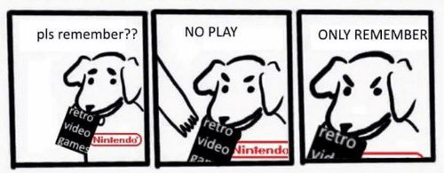

1game1week - Week 48 (11/26/25) - Plumbers Don't Wear Ties - Definitive Edition
Hey all! It's week 48! (11/26 -> 12/3)
We've only got ONE month to go! This challenge has been decently tough. This week is a little easier. It's a """"game"""" I played with my friend Billy, who visited me last weekend.
The visit was a lot of fun. Got good food, played fun games, and worked on a project for the P/ECE. We weren't really able to get to the finish line there. Might just require some more brain there.
Also, our Japanese teacher's reaction was pretty humorous. She seemed to be happy we got along.
Anyways!
New games from 11/19 -> 11/25:
MagnaCarta 2 (Xbox 360)
Sonic X Shadow Generations (Xbox Series X)
Currently, my backlog is at +8 (lower is better, +3 from last week).
And onto 1g1w. Once again, a game is considered "beaten" if I've accomplished the main objective of the game.
GAME: Plumbers Don't Wear Ties - Definitive Edition
PLATFORM: PS5
GENRE: Visual Novel?
STARTED ON: 11/22
BEATEN ON: 11/22
TOTAL PLAYTIME: 1 hour 5 minutes via PS-Timetracker
This wasn't really a game more than it was an interactive movie. It was also pretty bad.
Definitive Edition is a bit of a statement for game preservation and the influence of the social media / YouTube personalities when it comes to old games, leaving open that if Plumbers, of all games, can be preserved on modern platforms for future generations to... "enjoy"... what's to say actual great titles shouldn't be? Why should they be stuck on these retro consoles with no modern options?

Probably the only real worthwhile content is the interviews and extras that specifically are these personalities talking about the game.
I will say: I thought it was really sweet that the actors for Plumbers Don't Wear Ties looked like they had a lot of fun during the... shoot? Since it's just pictures...
Almost felt like friends getting together for an afternoon and making something incredibly cringe, just for the fun of it. I mean, it probably wasn't, but wouldn't it be nice if it was that way?
Thanks for reading! If you need to contact me for any reason, please feel free to email me at aru@hoshikawa-aru.com.